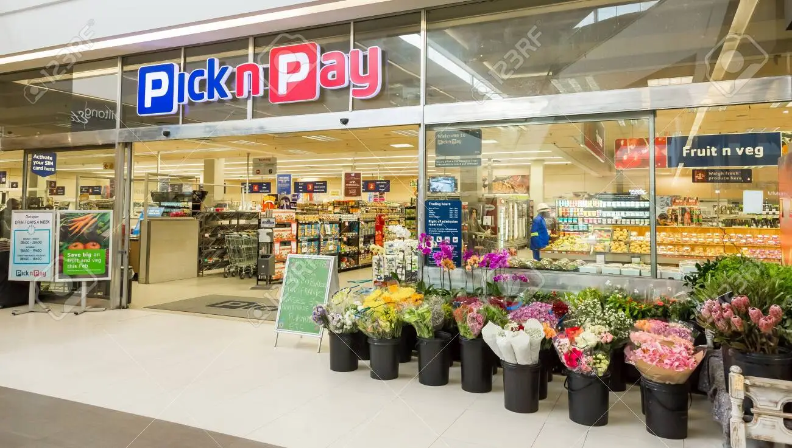
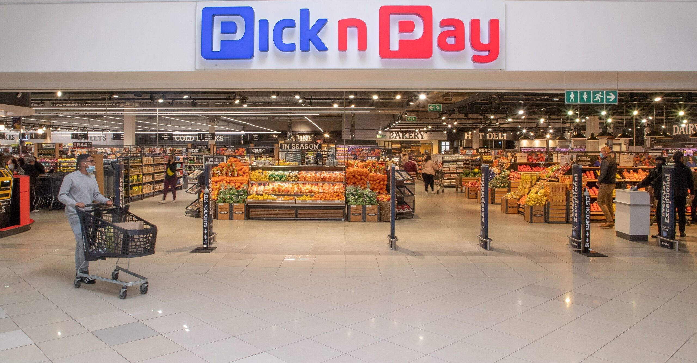

The Pick n Pay Stores Limited, through its subsidiaries and associates, operates in the retail sector on the African continent.
Pick n Pay is the quintessential family store focused on the customer. Since 1967 when consumer champion Raymond Ackerman purchased the first few stores, the Ackerman family’s vision has grown and expanded to now encompass stores in South Africa, Namibia, Botswana, Zambia, Mozambique, Mauritius, Swaziland and Lesotho. Additionally Pick n Pay owns a 49% share of a Zimbabwean supermarket business, TM Supermarkets. Our offer to customers focuses on groceries, clothing and general merchandise, but also includes additional value-added services to cater for our customers’ expectations and evolving needs. To ensure a convenient and accessible shopping experience the Group operates across multiple store formats, both franchised and owned.
For the past 5 years the Group’s core focus has been to strengthen its strong South African retail businesses under the Pick n Pay and Boxer brands, while adopting a systematic approach to expanding into adjacent areas, including geographical growth through the African continent.
As a major retailer in Africa, the Group strives to address socio-economic challenges through the supply of high-quality, affordable food for all customers, while providing significant employment and economic opportunities across its value chain.
The growth and success of Pick n Pay is attributable to 3 basic principles, which form the cornerstone of the business:
CONSUMER SOVEREIGNTY;
DOING GOOD IS GOOD BUSINESS;
AND MAXIMISING BUSINESS EFFICIENCY.


Mon To Fri: 9am-6pm
Sat:9am to 8pm
Sun:10am to 6pm
Supermarkets